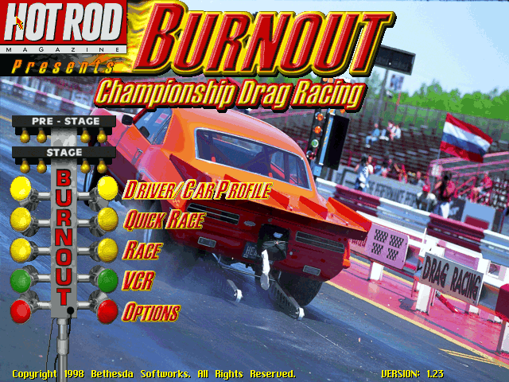
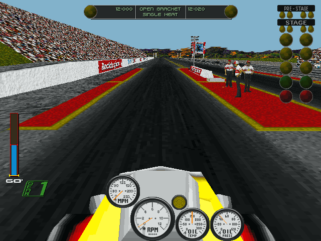

名稱：火熱狂飆／火爆狂飆：冠軍直線加速賽 (Burnout: Championship Drag Racing，英文版)
簡介：MediaTech 1998年出品的競速遊戲，由Bethesda代理發行。遊戲主要是一條短直線的
跑道進行飆車計時競速 [待補]。


保護：光碟
備註：DosBox安裝時，會當在音效卡設定程式中，請依照下列方式擇一處理：
1.使用假程式騙過遊戲安裝程式
當安裝到音效卡設定之前，先到C:\BURNOUT\SNDDRV，將SETSOUND.EXE更名掉，換成其他可
結束的小程式。等安裝成功後，再將SETSOUND.EXE換回來，同時執行SETSOUND.BAT，進行
實際的音效卡設定。
2.自行建立BURNOUT.CFG
遊戲安裝成功後，會產生一個BURNOUT.CFG，其格式如下：
D:＜NULL＞C:\BURNOUT
其中＜NULL＞表示NULL字元（ASCII 00h）。若不想更換SETSOUND.EXE，也可在設定音效卡
前或當機後，關閉DosBox，自行建立出這個BURNOUT.CFG檔案（否則遊戲會找不到光碟）。
記得再執行SETSOUND.BAT，進行實際的音效卡設定。
備註：進入遊戲後，主畫面若不斷閃爍，記得更新至1.23版。
檔案：patch123.rar = 1.23更新檔